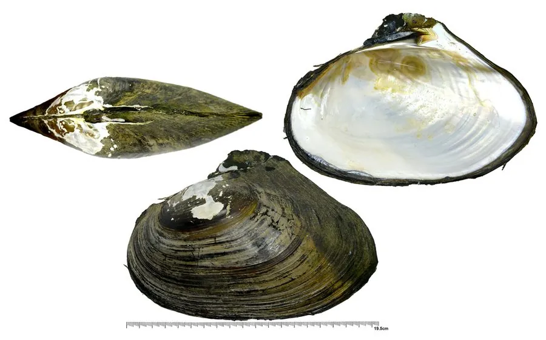

软体动物 · 动物界
褶纹冠蚌 Cristaria plicata

壳大而薄、壳面有粗大褶皱的淡水蚌，壳顶后方的冠状突起像一顶帽子，也常被养殖户用来培育淡水珍珠。
- 分类
- 门软体动物门纲双壳纲目蚌目科蚌科属冠蚌属
- 栖息环境
- 长江流域及华北、东北的湖泊、河流和池塘，泥沙底浅水区
- 地理分布
- 中国长江流域及华北、东北的湖泊、河流和池塘
- 保护级别
- 尚无保护级别；野生种群因污染、围垦和过度采捕下降
物种志
褶纹冠蚌的贝壳大而薄，壳长可达二十五厘米，壳质较脆，外形呈不等边三角形，壳面呈黄褐、黑褐至灰黑色，有粗大的同心褶皱和放射状的脊，壳顶后方有一片低矮的冠状突起，像一顶歪戴的帽子。壳内面有珍珠光泽，呈银白或淡蓝灰色，铰合部无明显的铰合齿。足部肥厚，斧状，能在泥沙中掘穴。它的壳比三角帆蚌更薄更大，壳面褶皱也更粗。
它分布于中国长江流域及华北、东北的湖泊、河流和池塘，栖息在水流平缓、底质为泥沙的浅水区，靠鳃滤食浮游植物和有机碎屑，耐污能力较强。雌雄异体，繁殖期在春夏，幼虫为钩介幼虫，需寄生在鱼类体表完成变态。褶纹冠蚌也是淡水育珠的母蚌之一，壳可制纽扣和工艺品，肉可作饲料。由于水体污染、围湖造田和过度采捕，野生种群数量下降，目前尚无保护级别，但部分产区已开展人工增殖。
形态与习性
- 食性靠鳃滤食浮游植物和有机碎屑，耐污力较强
- 壳长可达二十五厘米，壳大而薄
- 壳面有粗大同心褶皱，壳顶后方有冠状突起
- 繁殖春夏繁殖，钩介幼虫寄生鱼类完成变态
- 育珠淡水育珠母蚌之一，壳可制纽扣
- 分布长江流域及华北、东北的湖泊和河流
趣味知识
- 褶纹冠蚌壳顶后方有一片低矮的冠状突起，像给贝壳歪戴了一顶帽子。
- 它的壳又大又薄，壳面褶皱粗大，是淡水蚌中体型较大的种类。
- 它和三角帆蚌一样是淡水育珠的母蚌，但壳质更薄、更适合制纽扣。